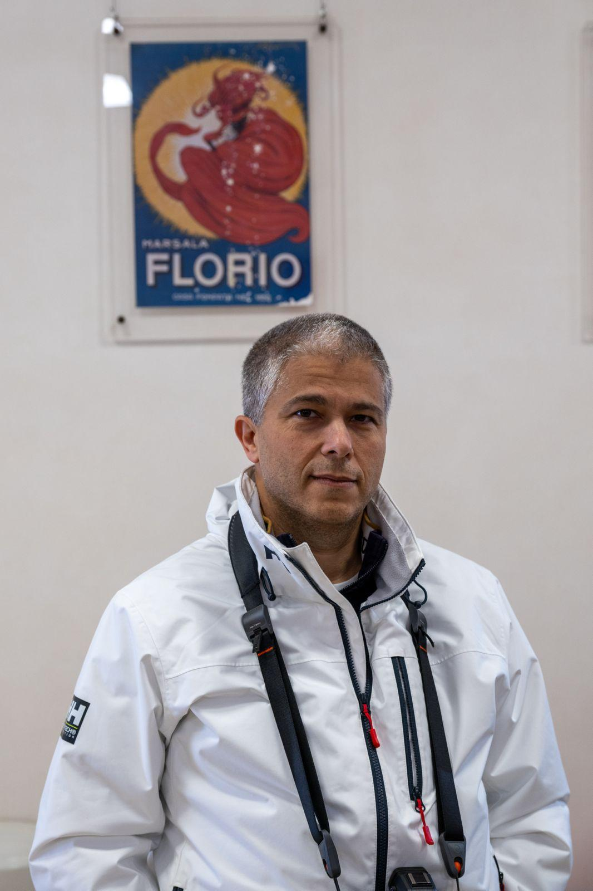

Fondatore · IT & fotografia
Fabio
Appassionato di fotografia, ma è soprattutto la parte meno visibile di TraMe a portare la sua firma: sito, strumenti digitali, tutto ciò che tiene in piedi l'associazione dietro le quinte.